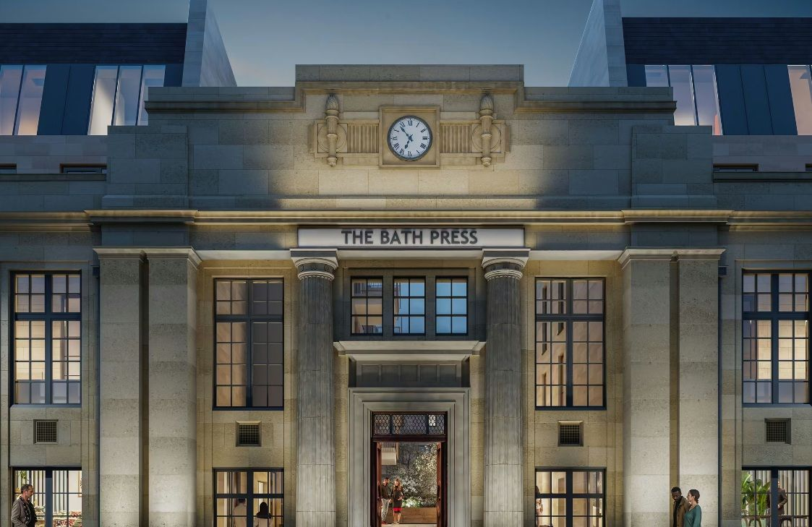
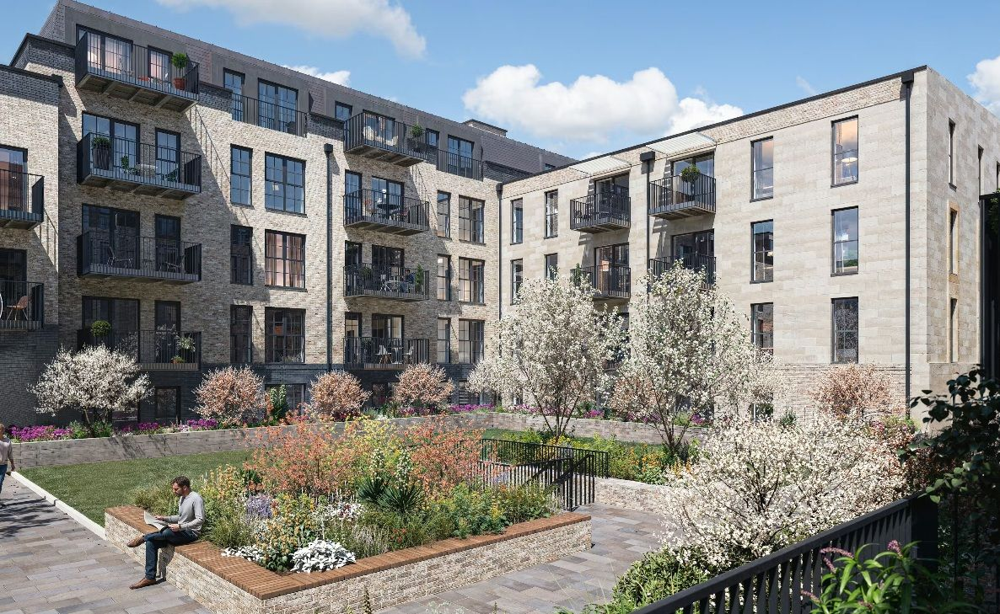

Commercial & New Build
City & Country Bath Press
Plumbing and heating for a landmark heritage regeneration in the heart of Bath.
GasWorld was appointed to carry out the plumbing and heating installations for City & Country's Bath Press, a landmark regeneration transforming the historic former Pitman Press site into a collection of high-specification homes in the heart of Bath.
The development combines contemporary apartments and townhouses with the restoration of the site's iconic retained façade, creating a unique blend of heritage architecture and modern living.
Our works
- A main heating plant room
- Multiple boosted cold water plant rooms
- Full heating and water distribution, with a site-wide BMS system
- Individual heat interface units in every apartment, giving residents full control of their own heating
- Ideal Logic air source heat pumps to each townhouse
Working within a sensitive historic setting, our team collaborated closely with the wider construction and design teams to make sure every installation complemented the character and quality of the scheme, while meeting the demands of modern, energy-efficient living.
The result is a high-quality residential development that reflects both the heritage of the Bath Press site and the standards City & Country is known for.

